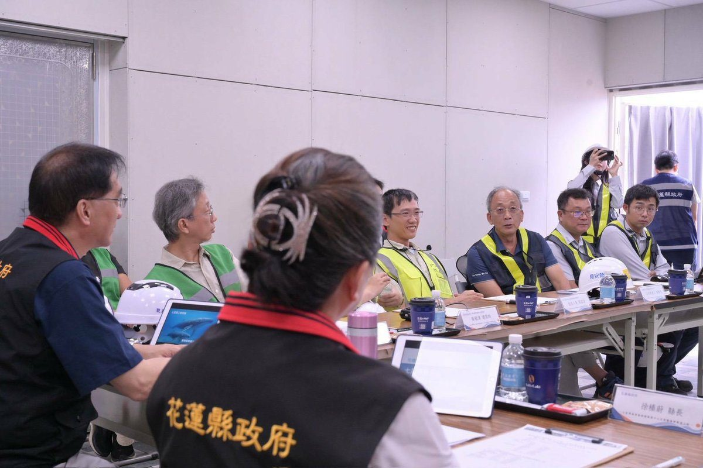
鯨魚母子意象打造海洋流線 徐榛蔚會勘七星潭旅服中心
花蓮縣長徐榛蔚現地會勘七星潭風景區旅遊服務中心工程進度，建物以鯨魚母子意象融入現代海洋流線設計，整合觀景平台、餐飲及旅遊諮詢，打造國際觀光新亮點。…
閱讀全文 →
花蓮縣長徐榛蔚現地會勘七星潭風景區旅遊服務中心工程進度，建物以鯨魚母子意象融入現代海洋流線設計，整合觀景平台、餐飲及旅遊諮詢，打造國際觀光新亮點。…
閱讀全文 →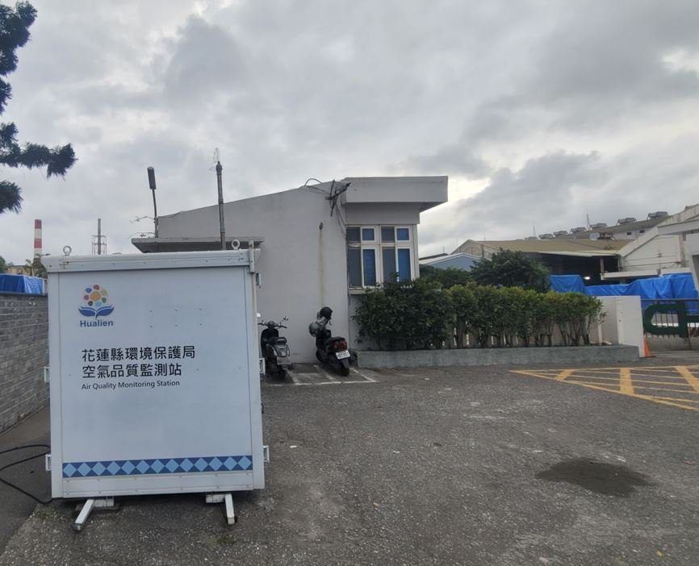
花蓮縣環保局採取科技監測與源頭改善策略，於華紙廠區周界設置電子鼻展開24小時連續監控，督促廠方設備升級，今年異味陳情件數較去年同期減少約五成。…
閱讀全文 →115年全民運動會即將於屏東盛大登場，花蓮縣長徐榛蔚親自為代表隊授旗並致贈加菜金，勉勵近千名參賽隊職員發揮堅韌拚勁，為花蓮爭取最高榮耀。…
閱讀全文 →
花蓮慈濟醫院復健醫學部與耳鼻喉頭頸外科走入碧雲莊社區舉辦安全吞嚥講座，教導長輩識別吞嚥障礙警訊、演練健口操，並提供個別評估守護高齡進食健康。…
閱讀全文 →吉安鄉公所攜手民間企業將於10月10日在南華工作站舉辦「超人力霸王迷你秀」，現場發送花蓮限定版頭套及貼紙，結合公益與觀光打造雙十親子假期。…
閱讀全文 →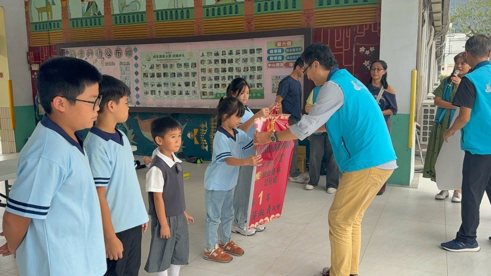
吉安鄉學童跨縣參加苗栗縣長盃競技疊杯錦標賽勇奪多項佳績，稻香國小及慈大附小學童展現極致專注力，吉安鄉長游淑貞指派團隊張貼紅榜祝賀肯定。…
閱讀全文 →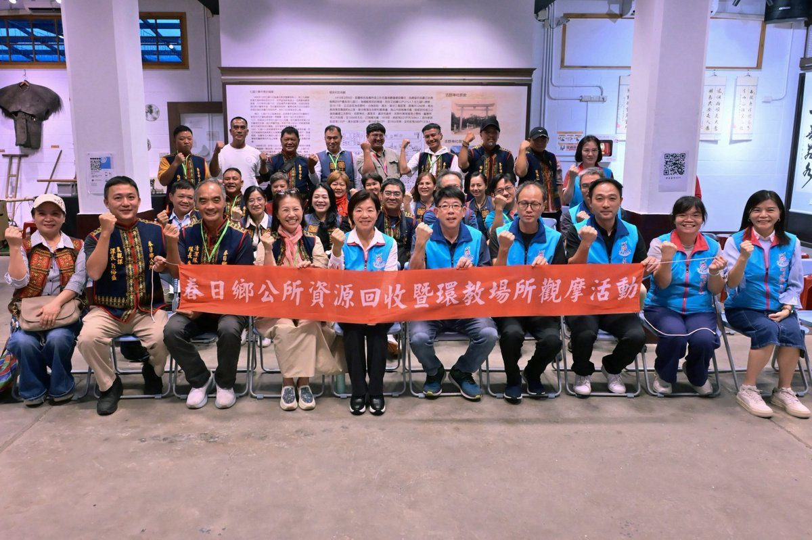
屏東縣春日鄉公所團隊組團前往吉安鄉觀摩環境治理，吉安鄉長游淑貞率公所團隊熱烈歡迎，雙方針對垃圾清運、資源回收再利用及社區志工運作深入交流。…
閱讀全文 →花蓮縣長徐榛蔚實地視察兩潭兩鐵、白鮑溪及四八高地鋼構橋等自行車道工程，整體工程進度全面超前。縣府針對瀝青路面重鋪、移除障礙路擋、更新節能與太陽能燈具進行全方位升級，並透過新設鋼構橋克服地形高差，致力打造安全流暢的低碳騎乘…
閱讀全文 →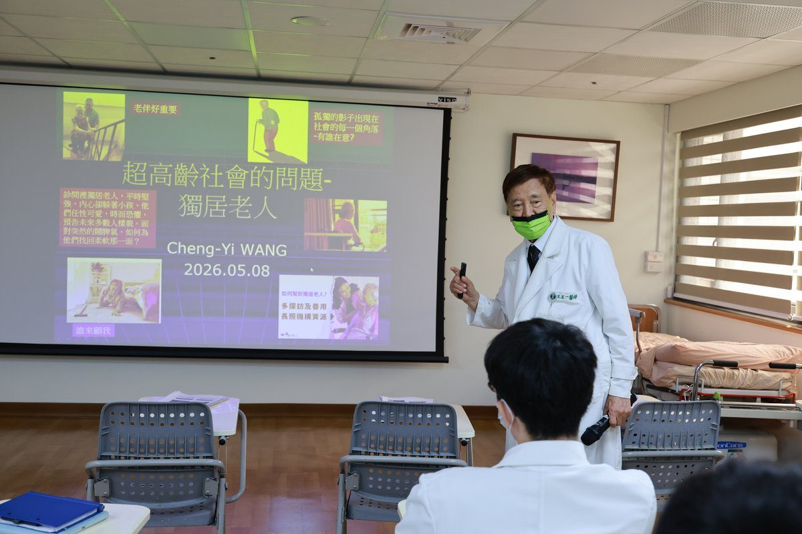
花蓮慈濟醫院顧問王正一教授開設「我是病人」醫療劇場，醫學生化身鄰居展開實境模擬，迅速研判獨居長者急性低血糖危機，將醫學教育從冰冷診間拉回真實生活現場。…
閱讀全文 →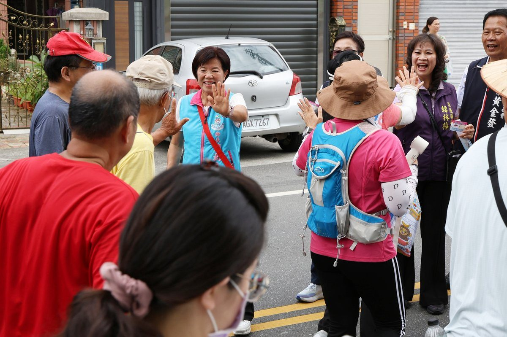
花蓮縣吉安鄉將於10月10日舉辦115年國慶健走活動，由鄉長游淑貞率領鄉親進行3.6公里健走。現場設置36個在地特色市集攤位，並推出100元換200元限量加倍券。超人氣角色超人力霸王七號、傑洛也將現身帶來精彩迷你秀，更有…
閱讀全文 →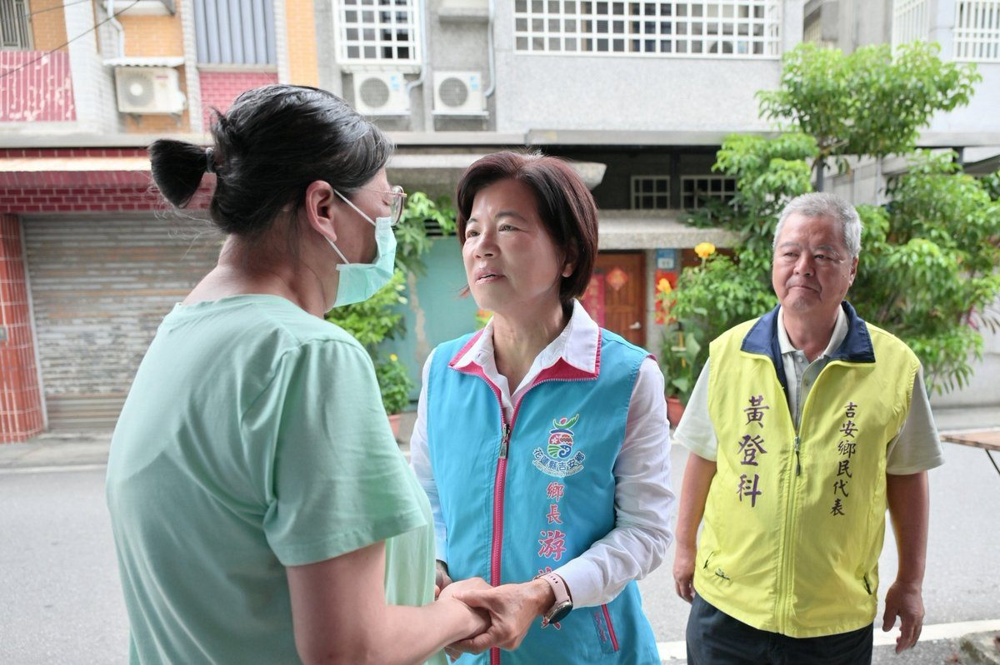
花蓮縣吉安鄉北昌村單親家戶長年面臨癱瘓照顧與經濟困境，近日又突遭喪子變故。吉安鄉長游淑貞攜手鄉民代表黃登科與社會課團隊，第一時間啟動急難救助機制前往喪宅關懷，並致贈2萬元慰問金。吉安鄉公所近年積極媒合張榮發基金會、張鈴玉…
閱讀全文 →
花蓮縣長徐榛蔚於議會提出任內最後施政總報告，感謝議會監督，展現八年穩健減債87.5億元成果，並回顧交通拓寬、治水、零元上學與長照全國第一等全齡施政基石。…
閱讀全文 →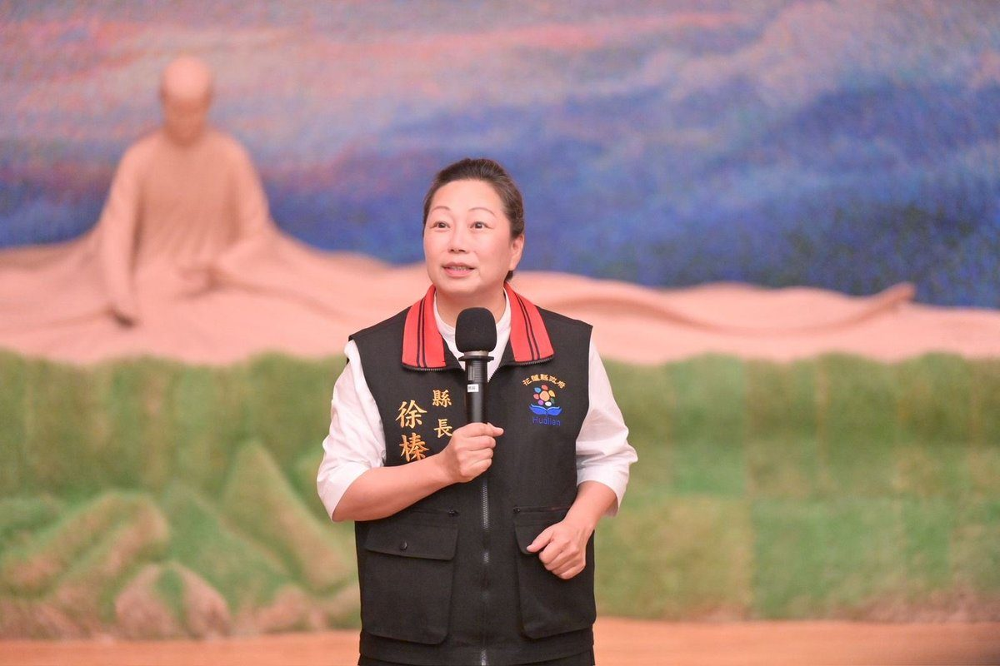
行政院115年東區災防業務訪評於花蓮慈濟靜思堂登場，花蓮縣長徐榛蔚率隊出席，闡述因災制宜精準減災策略，並向中央倡議設立跨縣市專業防災訓練基地。…
閱讀全文 →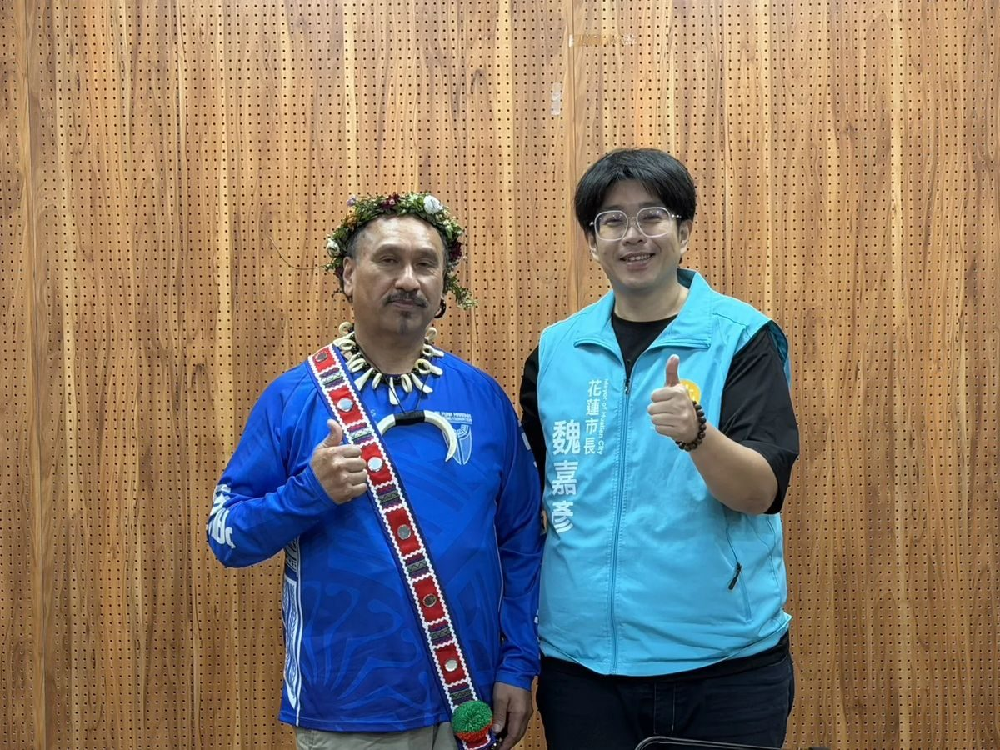
庫克群島傳統航海文化學者馬阿拉訪花蓮與魏嘉彥市長交流，雙方針對星象導航、傳統Vaka造舟與南島文化復振深入對談，期盼推動花蓮與南島青年的跨國海洋傳承。…
閱讀全文 →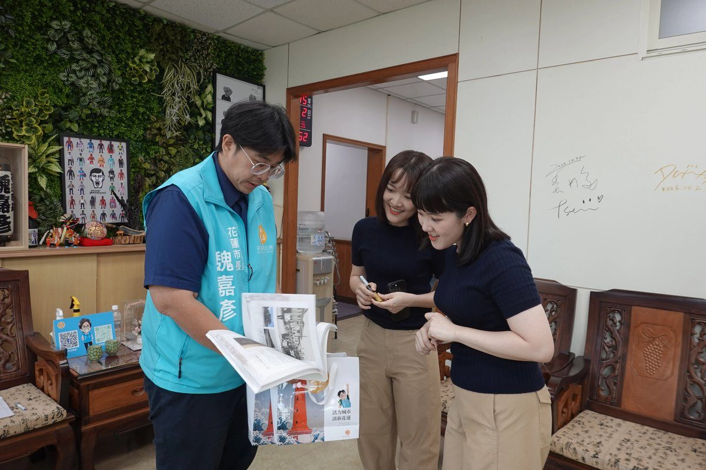
客語創作新生代「彤溫岑二重唱」拜會花蓮市長魏嘉彥，交流客語音樂與在地文化經驗，魏嘉彥致贈《帶你回花蓮》專書，並邀請姊妹倆為花蓮市原客嘉年華宣傳暖身。…
閱讀全文 →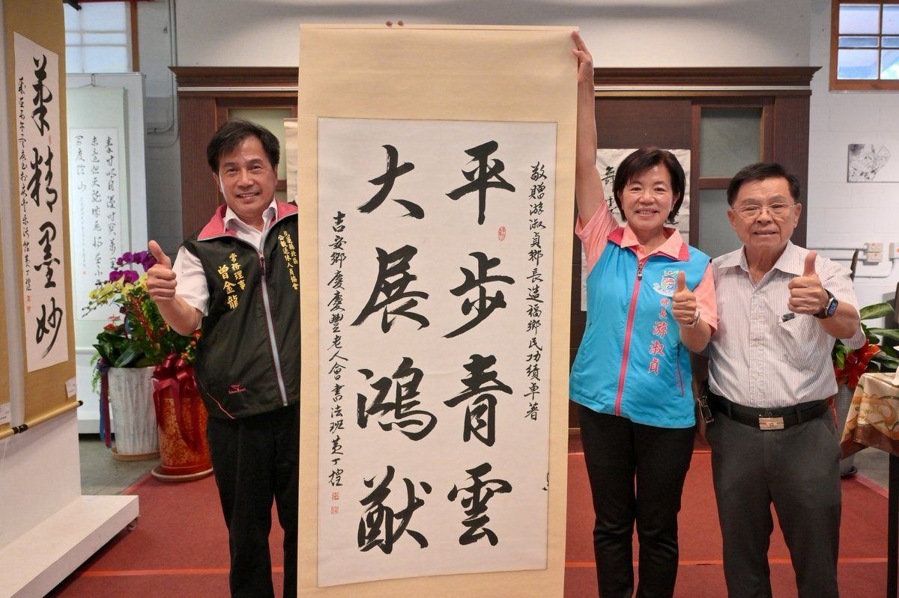
花蓮縣吉安鄉好客藝術村即日起舉辦「翰墨怡情PART II」書法展，展出由黃丁煌老師指導的慶豐樂活館書法班學員共101幅精美墨寶。鄉長游淑貞誠摯邀請各界鄉親在11月1日前來觀展，共同見證在地高齡長者樂活學習的成果，並感受楷…
閱讀全文 →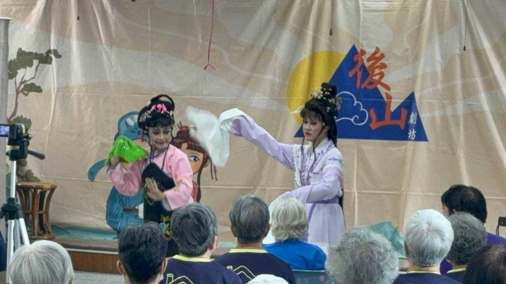
吉安鄉公所攜手後山劇坊於慶豐活動中心舉辦「逐家逗陣來看歌仔戲」，演出經典劇目《寶鏡重圓》並邀長輩登台體驗水袖身段，讓傳統藝術走入社區日常。…
閱讀全文 →吉安鄉公所10月10日於南華林業園區舉辦超人力霸王國慶同樂活動，特邀超人力霸王七號、傑洛及艾雷王登台演出，現場備有限量好禮、親子操及特色市集。…
閱讀全文 →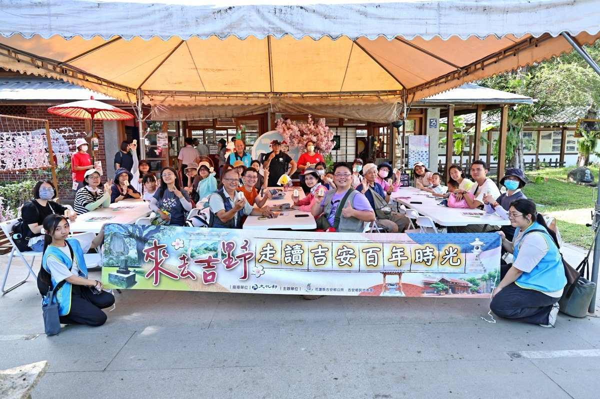
吉安鄉公所今（4）日舉辦「來去吉野－走讀吉安百年時光」，鄉長游淑貞帶領民眾實地踏查好客藝術村、慶修院、老街冰店與手作御守，結合數位鄉志引領全民重新看見吉安土地之美。…
閱讀全文 →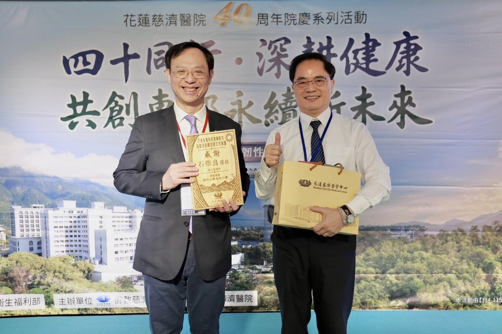
衛福部長石崇良親赴花蓮慈濟，於院慶論壇發表演講，闡述台灣應對超高齡社會的最新醫療政策。他提出以醫療改革、健康投資翻轉慢性病威脅，並創新推動「健康幣」激勵全民參與健康管理。同時，部長也強調「價值給付」將成為醫療永續發展的關…
閱讀全文 →